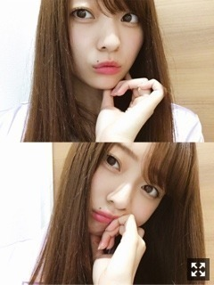
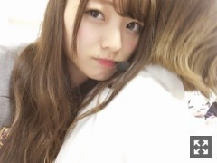
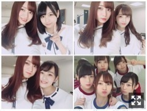
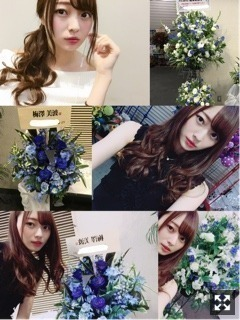

もうちょっとまってよ夏。梅澤美波
みなさまこんにちは！！
乃木坂46 ３期生の
梅澤美波です！！
(本日も長いであります、、

いつものぱじゃま(みえない
移動時間がすきみたい☺︎
特に夜の車と
夜の新幹線！！
外見ながらぼーっと音楽聴くのがすき☺︎
考えごとしながらとか
その曲の歌詞の意味理解しながら〜とか
１人でたそがれてるのがすき☺︎
ただそれだけ☺︎（笑）
あ、あのね
ドラマを見返そうと思って
昔見てたドラマを２話まで見たんだけど
ドラマとか映画とか見ると
世界に入り込みすぎて
そのストーリーで展開が最悪になってしまったら
自分までものすごく苦しくなるから
３話の途中で観るのやめました☺︎（笑）
なんだかな〜苦しくなるね（笑）
それくらい俳優さんや女優さんってすごいって思います、飲み込まれてしまう( .. )
５／２７ 日比谷野外音楽堂にて
お越しくださった皆様、
ありがとうございました！！
楽しんでいただけたかな〜( .. )
私はめちゃくちゃ本当に最高に楽しくって気持ちよかった！！
Overtureがかかって入場して
歌って踊っておしゃべりして
青空と、皆様と、
そしてステージに私達がいるっていう
この景色が本当に幸せで
皆様にも見て欲しいくらいだった☺︎
風も最高に気持ちよくて
屋内と野外、どちらも違った良さがあっていいですね( ¨̮ )
しばらく余韻が消えなくて
野音から１週間後ぐらいの私の夢に３日間ぐらい連続で
全力でMCやって全力で盛り上げようとしてる自分が出てきたりするの
あ〜、楽しかったんだろうな〜って
ステージに立つ私を見て
その気持ちが伝わればいいなあと思ってました☺︎
乃木坂に加入して、ダンスを始めた頃のレッスンの動画見ると
自分で言うのもあれだけど本当に変わったんだな〜って思います。
上手い下手じゃなくて、
踊り方とか気持ちとかの表れが
動画見てても全然ちがくて
頑張ってきて良かった、でもまだまだ出来る、頑張ろうって思います。

あや の背中◎
本番３０分前くらい(MC不安で台本手放せずにいたとき
ちょっとしゃべります(もうだいぶしゃべってる
セットリストは ほとんど 同じでした。
その中で
『ハルジオンが咲く頃』を
アンコールにて披露させて頂きました。
アイアで披露してない曲はこの曲だけかな、
野音でやるって聞いた時は
なんというかすごく感慨深かったなあ
３期生では２度目のパフォーマンスでした。
私はこの曲で、３期生バージョンとして
センターに立たせていただきました。
先輩方にとって、ファンの皆様にとって
この曲がどれほど大切な曲かを
私なりに物凄く理解していたつもりだったから
真ん中に立つことがすごく不安で仕方なかったです
でも
すごく想い入れが強いです。
私がこの曲で"３期生バージョン"で
真ん中に立たせて頂ける意味とか
そうゆうものは物凄く考えてその場所に立っているつもりです。
色々思うことがある方もいると思いますが
この曲を真ん中で歌うことに対して、私は私なりにすごく向き合っていたつもりだし、
歌詞の意味とかダンスも歌も
すごくすごく大切にパフォーマンスさせていただいています。
皆様に愛されているこの曲を
大切にしたいって心から思うから☺︎
だから、この曲をもう１度披露できたことが物凄く嬉しかった☺︎
"みなみん"コールも
物凄く嬉しかったし
白と黄色のハルジオンの色のサイリウムも、
ステージから見える私のファンの方が喜んでくださってる表情も嬉しくてしょうがなかったし
パフォーマンスしているときのこの状況に
涙を抑えるのが必死でした。
MCで喋れなくなってしまうから
出来るだけ泣くのは堪えたんだけどね、アイアの時も( .. )
既存の曲だからこそ、クオリティが落ちてしまったらという恐怖は物凄くあったけど(これは全てにおいて言えること)、センターに立たせていただく重みはすごくあって、
最初で最後かもしれないし
色々と想いが強いです。
真ん中に立たせていただく
有難味もすごくあります。
なんといっても、
この曲が大好きだから☺︎
結果残せたかな〜
ものすごく貴重でした
全力でやって、全力で終われた
単独、またできるかなあ

長身タワーコンビのちゃんれの☺︎
最近一緒のかえで
だいすきはづき
一昨日のビンゴさんのときの
アルバムのイベントで飛び回った３日間
握手会の１日
５日連続で皆様に会えた幸せ☺︎☺︎ありがとう
質問コーナー！！
Q.元気の源は？
A.リアルに握手会がめちゃくちゃ元気もらえます。まだまだ未熟で恩返しも出来ていない私に時間をかけて会いに来てくれるのが嬉しくてたまらないし、みんなとお話している時間が好き☺︎コメント読んでる時間もすき☺︎まだ会いに来られてない方もいつか会える日までずっと待ってるよ☺︎
Q.自分の身長にコンプレックスある？
Q.たまちゃんが可愛すぎて困ってますどうしたらいいですか？
A.どうぞ、推してあげてください☺︎（笑）
たまみみなみもだいすき〜
Q.どんな音楽聴くの？？
A.洋楽はあまり聴かず、邦楽がほとんどかな☺︎Aimerさんが好きでずっと聴いてるかな〜あとはオールジャンルです、色々なアーティストさんを聞きます◎バスとかの移動中はしっとりした曲がほとんど〜
Q.高校で着てたカーディガンの色は？
A.黒か紺しかダメだったのでずっとネイビー着てたよ◎制服着たいなあ
Q.ストレス溜まったら何するの？
A.基本何もしないよ〜（笑）たまに枕に叫ぶ☺︎（笑）あとは音楽に助けられることが多い( ¨̮ )
そしてそして
京都での個別握手会ありがとうございました！！
野音の次の日ってゆうのもあり
感想沢山聞けて嬉しかったよ☺︎
お花も（ ｉ _ ｉ ）

見にくくてごめんなさい、、
一番左上は１部 オフショル着たよ〜
真ん中右は２部 真っ黒でした〜
３部は時間なくて撮れなかった( .. )
毎回レーンに行くとあるお花。
幸せ者だなあ
ありがとうね、本当に
今週の幕張個握来られる方、よろしくね☺︎
たのしみ〜服なに着ましょ
暖かいコメントありがとう。
涙出そうなるやんけー！！（笑）
みんながいれば無敵だ☺︎って思える
のびのび頑張るぜ〜
今しかできないことばかりだからね
大切にします。☺︎
素敵やね〜みんな
そんな人になれるように私も頑張ります☺︎
いや、いつも重たい人みたいだけど
握手会とか直接だと中々恥ずかしくて言えないことばかりだし
文章でなら言える気がしてるから書いてるんだからね！！（笑）
12回に１回しかないし( .. )
あ、ビンゴさんのマイクパフォーマンス
怖かったでしょ
本気でやってみたよ、
でも、普段はあんなじゃないから安心してね。
（笑）
やるなら本気で、と思って
自分なりに言い回しとか収録始まるまでずっと１人で練習してた
元々見た目で怖がられる人だから
本気でやっちゃうと想像以上に怖くなってしまっていた、
新幹線の話本当だけど
その時は全然全く与田に怒ってないし
むしろ可愛いな〜って感じだったよ☺︎
本当に怒ってたわけじゃないよ〜☺︎
以上
ていっ
それじゃあまた12日後ね
ばいばい
不安になることも多々ありますが
今を頑張ってみようという気持ちであります、見ててくれる方は必ずいるんです
どこかが欠けているなら
それはどこかで取り返さないといけない
皆様がいる限り無敵、ありがとう、
みんな〜次会えるまで、がんばろな
Original：https://www.nogizaka46.com/s/n46/diary/detail/38997?ima=0527&cd=MEMBER